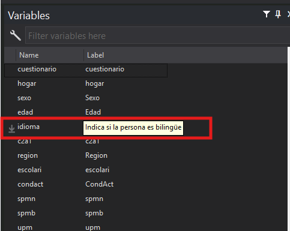

Importar archivos y uso de etiquetas
Comandos
cd
Directorio de trabajo
Cuando trabajamos con programas como STATA es importante tener en cuenta que existe algo llamado directorio de trabajo. Puede pensar en el directorio de trabajo como la carpeta en la que STATA busca y guarda archivos en la computadora.
Es importante tener esto en cuenta porque cuando guardemos archivos, por ejemplo un gráfico, STATA lo guarda en nuestro directorio de trabajo actual.
cd
cd signficia change directory y nos permite cambiar la carpeta en la que estamos trabajando.
pwd nos permite ver la carpeta que estamos usando
*Primero podemos ver la carpeta inicial
pwd
*Luego podemos cambiarla usando cd
cd "C:\Users\dmoya\Downloads\lab5"
pwd
Resultado
import excel
En la clase pasada vimos que se podían cargar archivos de STATA usando use
Podemos tratar de abrir la base de datos para este laboratorio
Pero esto nos da el siguiente error
Esto ocurre porque el formato del archivo es de xlsx o sea formato Excel, pero use sirve para cargar solo archivos de STATA.
Para cargar archivos en otros formatos hay que usar el comando import y especificar el tipo de archivo.
La opción firstrow le indica a STATA que la primera fila del archivo tiene los nombres de las variables
save
Otra utilidad que tenemos es que podemos guardar la base de datos en formato STATA o .dta. Para esto usamos save.
Llegados a este punto podemos analizar la base de datos
labels
Lo primero que podemos observar es la variable idioma. Esta indica si la persona habla o no otro idioma; sin embargo, tiene valores numéricos de 0 y 1, por lo que no es claro a qué se refiere cada uno.
labels
En este caso sería muy útil indicar que 1 signfica "sí" y 0 significa "no".
Para esto nos sirven las etiquetas o labels
label define
Para crear una etiqueta usamos la siguiente syintaxis
Tip
Puede pensar en las etiquetas como un diccionario que me dice la definición de lo que significa cada número.
Luego de ejectuar el comando puede revisar la base de datos, pero verá que aún tenemos solo los valores 0 y 1.
aplicar etiquetas
label define solo define una etiqueta, pero en ningún momento la aplicamos a alguna variable.
label values
Para aplicar una etiqueta se usa label values
label var
Otra opción útil es añadir etiquetas al nombre de la variable. Esto nos da una breve descripción adicional de la información que contiene una variable.
Por ejemplo, si queremos aplicar la etiqueta a la variable idioma, podemos hacer lo siguiente.
La etiqueta la podemos ver en el explorador de variables.

generate
En la mayoría de casos, cuando estámos realizando una investigación es muy común tener que crear variables adicionales.
Imagine por ejemplo, que estámos interesados en comparar el desempleo entre dos grupos, jóvenes y personas no jóvenes.
Tenemos disponible la variable edad, pero nos sería más útil tener una variable que indique si la persona es jóven o no.
Tip
Podemos entonces crear una variable nueva que cumpla esta función
En STATA esto se logra usando generate. La syntaxis de generate es la siguiente:
Este ejemplo es muy simple, pero en nuestro caso necesitamos algo más elaborado, por ejemplo, verificar la edad de la persona. Vamos a considerar jóven a aquellos con 25 años o menos.
Operadores lógicos
Para lograr esto tenemos que usar operadores lógicos. En seguida se muestran los operadores lógicos y su uso
| Operador | Significado | Ejemplos |
|---|---|---|
| == | Verifica una igualdad | gen x=1 if edad==25 |
| & | Verifica que 2 condiciones sean ciertas | gen x=1 if (edad==25) & (idioma==1) |
| != | Distinto de | gen x=1 if idioma!=1 |
| < | Menor que | gen x=1 if edad < 25 |
| <= | Menor o igual | gen x=1 if edad <= 25 |
| > | Mayor que | gen x=1 if edad > 25 |
| >= | Mayor o igual | gen x=1 if edad >= 25 |
En nuestro caso nos sirve usar la condición de menor o igual que
destring
Antes hay que hacer un destring a edad, pero edad contiene valores no numéricos.
En este caso debemos usar la opción force para ignorar los casos donde no hay números
cuidado
A este punto logramos crear la variable, pero nos falta indicar el valor cuando la persona es menor que 25
Podríamos intentar usar gen, pero obtendremos un error porque no se puede crear una variable que ya existe
replace
En este caso lo que tenemos que hacer es reemplazar el valor de la variable, para esto usamos replace
replace nos permite reemplazar valores para variables que ya existen. Su syntaxis es la siguiente:
rename
rename permite cambiar el nombre de una variable
La syntaxis es la siguiente:
drop
drop sirve para eliminar alguna variable que no nos interesa mantener en la base de datos
keep
keep es útil cuando se quiere mantener solo algunas variables necesarias y eliminar el resto